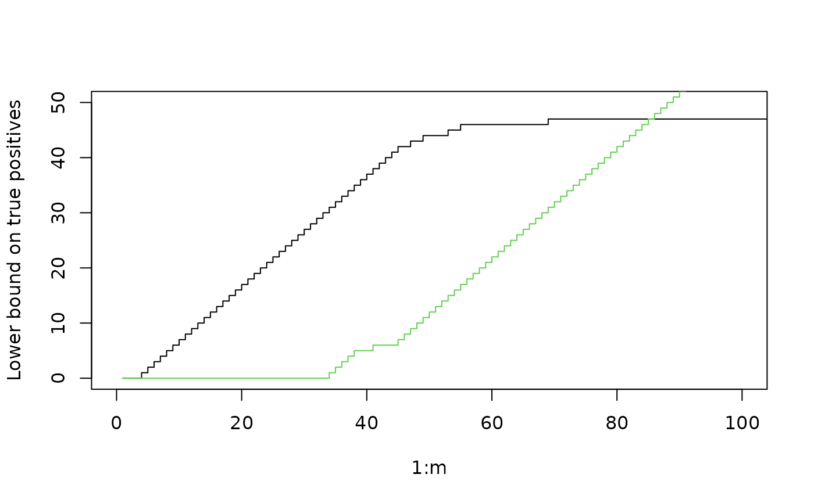

Generate one-sided p-values associated to a given signal with equi-correlated noise
Source:R/tree-simulation-functions.R
curveVstar_tree.RdGenerate one-sided p-values associated to a given signal with equi-correlated noise
curveVstar_tree(treeFam, ordering)Arguments
- treeFam
A tree-based reference family, see example below
- ordering
A permutation of
1, ..., m, the ordering of the \(m\) null hypotheses
Value
A vector of length \(m\), whose \(k\)-th element is a lower bound \(V^*(S_k)\) on the number of true positives in the set \(S_k\)
of the first \(k\) hypotheses according to the specified ordering
References
Durand, G., Blanchard, G., Neuvial, P., & Roquain, E. (2020). Post hoc false positive control for structured hypotheses. Scandinavian Journal of Statistics, 47(4), 1114-1148.
Examples
m <- 250
s <- 25
K1 <- floor(m/(s * 4))
d <- 1
m1 <- s*K1*d
barmu <- 4
dd <- dyadic.from.window.size(m, s, method = 2)
leaf_list <- dd$leaf_list
mu <- gen.mu.leaves(m = m, K1 = K1, d = d,
grouped = TRUE, setting = "const",
barmu = barmu, leaf_list =leaf_list)
pvals <- gen.p.values(m = m, mu = mu, rho = 0)
alpha <- 0.1
ZL <- zetas.tree(dd$C, leaf_list, zeta.DKWM, pvals, alpha = alpha)
treeFam <- list(tree = dd$C, leaves = leaf_list, zetas = ZL)
# order by p-value (favorable to Simes)
op <- order(pvals)
Vp <- curveVstar_tree(treeFam, op)
# Simes
VpS <- sapply(1:m, FUN=function(kk) posthocBySimes(pvals, op[1:kk], alpha))
plot(1:m, 1:m-Vp, t = 's',
xlim = c(0, 2*m1), ylim = c(0, m1),
ylab = "Lower bound on true positives")
lines(1:m, 1:m-VpS, t = 's', col = 3)

# order by 'mu' (favorable to DKWM)
omu <- order(mu, decreasing = TRUE)
Vmu <- curveVstar_tree(treeFam, omu)
thrSimes <- t_linear(alpha, seq_len(m), m)
SmuS <- sapply(1:m, FUN=function(kk) posthocBySimes(pvals, omu[1:kk], alpha))
plot(1:m, 1:m-Vmu, t = 's',
xlim = c(0, 2*m1), ylim = c(0, m1),
ylab = "Lower bound on true positives")
lines(1:m, SmuS, t = 's', col = 3)